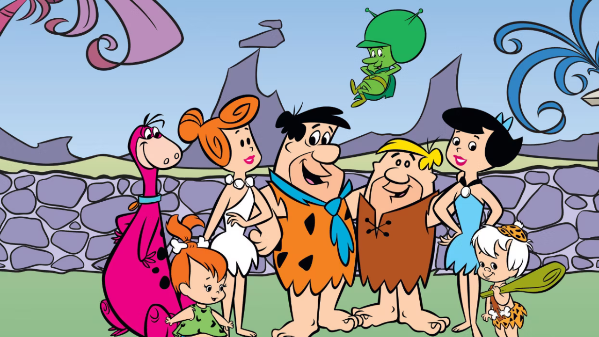

About Fred Flintstone
Fred is the main character of the series. He's an accident-prone bronto-crane operator at the Slate Rock and Gravel Company and the head of the Flintstone household. He is quick to anger (usually over trivial matters), but is nonetheless a very loving husband and father. He's also good at bowling and is a member of the fictional "Loyal Order of Water Buffaloes" (Lodge No. 26), a men-only club paralleling real-life fraternities such as the Loyal Order of Moose.
Fred Flintstone and his friends
Fred Flintstone Characteristics
- Hot-headed, impulsive, but caring and loyal personality
- Works as a bronto-crane operator at Slate Rock and Gravel Company
- Enjoys bowling, golf (with primitive equipment), and family time
- Iconic catchphrases: "Yabba-Dabba-Doo!" and "Wilmaaa!
Fred Flintstone's Friends
Fred Flintstone, the iconic character from the animated series "The Flintstones," is known for his colorful group of friends who add humor and camaraderie to his adventures. His closest companion is Barney Rubble, his loyal neighbor and best friend. Together, they often find themselves in humorous situations, whether at work in the quarry or enjoying leisure time with their families. Fred also shares a close bond with his wife, Wilma, who provides him with love and support, and their daughter, Pebbles, who adds joy to their family dynamic. Additionally, Fred's social circle includes other memorable characters such as Betty Rubble, Barney's wife and Wilma's confidante, and their son, Bamm-Bamm, known for his incredible strength despite his young age. Through their various escapades and misadventures, Fred's friends bring laughter, loyalty, and warmth to his life in the prehistoric town of Bedrock.Click on the links below to read more about them: